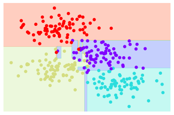
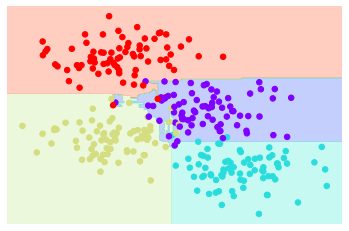
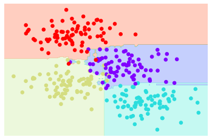
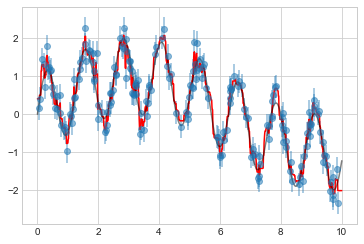
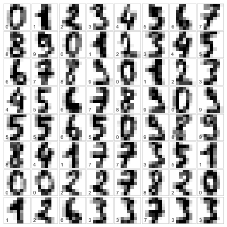

%matplotlib inline
import numpy as np
import matplotlib.pyplot as plt
plt.style.use('seaborn-whitegrid')심층 분석: 의사결정 트리 및 랜덤 포레스트
이전에는 간단한 생성 분류자(naive Bayes, 심층: Naive Bayes 분류 참조)와 강력한 판별 분류자(지원 벡터 머신, 심층: Support Vector Machines 참조)를 자세히 살펴보았습니다. 여기서는 또 다른 강력한 알고리즘인 랜덤 포레스트라고 불리는 비모수적 알고리즘을 살펴보겠습니다. 랜덤 포레스트는 앙상블 방법의 예입니다. 즉, 더 간단한 추정기 세트의 결과를 집계하는 방법을 의미합니다. 이러한 앙상블 방법의 다소 놀라운 결과는 합이 부분보다 클 수 있다는 것입니다. 즉, 여러 추정기 중 다수 투표의 예측 정확도가 투표를 수행하는 개별 추정기의 예측 정확도보다 더 좋을 수 있습니다! 다음 섹션에서 이에 대한 예를 살펴보겠습니다.
표준 가져오기부터 시작합니다.
랜덤 포레스트에 동기를 부여하기: 의사결정 트리
랜덤 포레스트는 의사결정 트리를 기반으로 구축된 앙상블 학습자의 예입니다. 이러한 이유로 의사결정 트리 자체에 대해 논의하는 것부터 시작하겠습니다.
의사결정 트리는 객체를 분류하거나 레이블을 지정하는 매우 직관적인 방법입니다. 분류에 초점을 맞추도록 고안된 일련의 질문을 하기만 하면 됩니다. 예를 들어 하이킹 중에 만나는 동물을 분류하기 위해 의사결정 트리를 구축하려는 경우 다음 그림에 표시된 결정 트리를 구축합니다.

이진 분할을 사용하면 이를 매우 효율적으로 수행합니다. 잘 구성된 트리에서 각 질문은 옵션 수를 약 절반으로 줄여 많은 수의 클래스에서도 옵션 범위를 매우 빠르게 좁힙니다. 물론 비결은 각 단계에서 어떤 질문을 물어볼지 결정하는 데 있습니다. 의사결정 트리의 머신러닝(Machine Learning) 구현에서 질문은 일반적으로 데이터에서 축 정렬 분할의 형태를 취합니다. 즉, 트리의 각 노드는 기능 중 하나 내의 컷오프 값을 사용하여 데이터를 두 그룹으로 분할합니다. 이제 이에 대한 예를 살펴보겠습니다.
의사결정나무 만들기
4개의 클래스 레이블 중 하나가 있는 다음 2차원 데이터를 고려하십시오(다음 그림 참조).
from sklearn.datasets import make_blobs
X, y = make_blobs(n_samples=300, centers=4,
random_state=0, cluster_std=1.0)
plt.scatter(X[:, 0], X[:, 1], c=y, s=50, cmap='rainbow');
이 데이터를 기반으로 구축된 간단한 의사 결정 트리는 일부 정량적 기준에 따라 하나 또는 다른 축을 따라 데이터를 반복적으로 분할하고 각 수준에서 해당 지역 제 포인트의 과반수 투표에 따라 새 지역의 레이블을 할당합니다. 다음 그림은 이 데이터에 대한 의사결정 트리 분류기의 처음 4개 수준을 시각화한 것입니다.

첫 번째 분할 이후 상위 가지의 모든 점은 변경되지 않은 상태로 유지되므로 이 가지를 더 이상 세분화할 필요가 없습니다. 한 가지 색상을 모두 포함하는 노드를 제외하고 각 수준에서 모든 영역은 두 기능 중 하나를 따라 다시 분할됩니다.
의사결정 트리를 데이터에 맞추는 과정은 Scikit-Learn에서 DecisionTreeClassifier 추정기를 사용하여 수행합니다.
from sklearn.tree import DecisionTreeClassifier
tree = DecisionTreeClassifier().fit(X, y)분류기의 출력을 시각화하는 데 도움이 되는 유틸리티 함수를 작성해 보겠습니다.
def visualize_classifier(model, X, y, ax=None, cmap='rainbow'):
ax = ax or plt.gca()
# Plot the training points
ax.scatter(X[:, 0], X[:, 1], c=y, s=30, cmap=cmap,
clim=(y.min(), y.max()), zorder=3)
ax.axis('tight')
ax.axis('off')
xlim = ax.get_xlim()
ylim = ax.get_ylim()
# fit the estimator
model.fit(X, y)
xx, yy = np.meshgrid(np.linspace(*xlim, num=200),
np.linspace(*ylim, num=200))
Z = model.predict(np.c_[xx.ravel(), yy.ravel()]).reshape(xx.shape)
# Create a color plot with the results
n_classes = len(np.unique(y))
contours = ax.contourf(xx, yy, Z, alpha=0.3,
levels=np.arange(n_classes + 1) - 0.5,
cmap=cmap, zorder=1)
ax.set(xlim=xlim, ylim=ylim)이제 의사결정 트리 분류가 어떻게 보이는지 조사합니다(다음 그림 참조).
visualize_classifier(DecisionTreeClassifier(), X, y)
이 노트북을 라이브로 실행하는 경우 온라인 부록에 포함된 도우미 스크립트를 사용하여 의사결정 트리 구축 프로세스의 대화형 시각화를 불러올 수 있습니다.
# helpers_05_08 is found in the online appendix
import helpers_05_08
helpers_05_08.plot_tree_interactive(X, y);깊이가 증가함에 따라 매우 이상한 모양의 분류 영역을 얻는 경향이 있습니다. 예를 들어 깊이 5에서는 노란색과 파란색 영역 사이에 키가 크고 마른 보라색 영역이 있습니다. 이는 실제 고유 데이터 분포의 결과라기보다는 데이터의 특정 샘플링 또는 노이즈 속성의 결과라는 것이 분명합니다. 즉, 이 의사결정 트리는 깊이가 5개 수준에 불과하더라도 데이터에 분명히 과적합됩니다.
의사결정 트리 및 과적합
이러한 과대적합은 의사결정 트리의 일반적인 속성으로 밝혀졌습니다. 트리에서 너무 깊이 들어가기가 매우 쉽고, 따라서 해당 데이터가 추출된 분포의 전체 속성보다는 특정 데이터의 세부 사항을 맞추는 것이 매우 쉽습니다. 이러한 과적합을 확인하는 또 다른 방법은 데이터의 다양한 하위 집합에 대해 훈련된 모델을 살펴보는 것입니다. 예를 들어 이 그림에서는 각각 원본 데이터의 절반에 대해 두 개의 서로 다른 트리를 훈련합니다.

어떤 곳에서는 두 나무가 일관된 결과를 생성하는 반면(예: 네 모서리에서) 다른 곳에서는 두 나무가 매우 다른 분류를 제공하는 것이 분명합니다(예: 두 클러스터 사이의 영역). 중요한 관찰은 분류가 덜 확실할 때 불일치가 발생하는 경향이 있으므로 이 두 트리 모두의 정보를 사용하면 더 나은 결과를 얻을 수 있다는 것입니다.
이 노트북을 실시간으로 실행하는 경우 다음 기능을 사용하면 데이터의 임의 하위 집합에 대해 훈련된 트리의 적합성을 대화형으로 표시합니다.
# helpers_05_08 is found in the online appendix
import helpers_05_08
helpers_05_08.randomized_tree_interactive(X, y)두 트리의 정보를 사용하면 결과가 향상되는 것처럼 많은 트리의 정보를 사용하면 결과가 더욱 향상될 것으로 기대합니다.
추정기 앙상블: 랜덤 포레스트
여러 과적합 추정기를 결합하여 과적합의 영향을 줄일 수 있다는 개념은 배깅이라는 앙상블 방법의 기초가 됩니다. 배깅은 병렬 추정기의 앙상블(아마도 복주머니)을 사용하며, 각각은 데이터에 과적합되고 더 나은 분류를 찾기 위해 결과의 평균을 냅니다. 무작위 결정 트리의 앙상블을 랜덤 포레스트라고 합니다.
이러한 유형의 배깅 분류는 여기에 표시된 것처럼 Scikit-Learn의 BaggedClassifier 메타 추정기를 사용하여 수동으로 수행합니다(다음 그림 참조).
from sklearn.tree import DecisionTreeClassifier
from sklearn.ensemble import BaggingClassifier
tree = DecisionTreeClassifier()
bag = BaggingClassifier(tree, n_estimators=100, max_samples=0.8,
random_state=1)
bag.fit(X, y)
visualize_classifier(bag, X, y)
이 예에서는 각 추정기를 훈련 포인트의 80%로 구성된 무작위 하위 집합으로 피팅하여 데이터를 무작위화했습니다. 실제로 의사결정 트리는 분할이 선택되는 방식에 일부 확률론을 주입하여 보다 효과적으로 무작위화됩니다. 이렇게 하면 모든 데이터가 매번 피팅에 기여하지만 피팅 결과는 여전히 원하는 임의성을 갖습니다. 예를 들어 분할할 특성을 결정할 때 무작위 트리는 상위 여러 특성 중에서 선택합니다. Scikit-Learn 문서 및 내부 참조에서 이러한 무작위화 전략에 대한 자세한 기술 세부정보를 읽을 수 있습니다.
Scikit-Learn에서는 무작위 결정 트리의 최적화된 앙상블이 모든 무작위화를 자동으로 처리하는 ‘RandomForestClassifier’ 추정기에 구현됩니다. 여러분이 해야 할 일은 여러 개의 추정기를 선택하는 것뿐입니다. 그러면 원하는 경우 병렬로 매우 빠르게 트리의 앙상블에 맞춰집니다(다음 그림 참조).
from sklearn.ensemble import RandomForestClassifier
model = RandomForestClassifier(n_estimators=100, random_state=0)
visualize_classifier(model, X, y);
무작위로 교란된 100개 이상의 모델을 평균화함으로써 매개변수 공간이 어떻게 분할되어야 하는지에 대한 직관에 훨씬 더 가까운 전체 모델을 얻게 된다는 것을 확인합니다.
랜덤 포레스트 회귀
이전 섹션에서 우리는 분류 맥락 내에서 랜덤 포레스트를 고려했습니다. 회귀 분석(즉, 범주형 변수가 아닌 연속형 변수)의 경우에도 랜덤 포레스트가 작동하도록 만들 수 있습니다. 이를 위해 사용할 추정기는 RandomForestRegressor이며 구문은 앞서 본 것과 매우 유사합니다.
빠른 진동과 느린 진동의 조합에서 가져온 다음 데이터를 고려하십시오(다음 그림 참조).
rng = np.random.RandomState(42)
x = 10 * rng.rand(200)
def model(x, sigma=0.3):
fast_oscillation = np.sin(5 * x)
slow_oscillation = np.sin(0.5 * x)
noise = sigma * rng.randn(len(x))
return slow_oscillation + fast_oscillation + noise
y = model(x)
plt.errorbar(x, y, 0.3, fmt='o');
Random Forest Regressor를 사용하면 다음과 같이 최적 곡선을 찾을 수 있습니다(다음 그림 참조).
from sklearn.ensemble import RandomForestRegressor
forest = RandomForestRegressor(200)
forest.fit(x[:, None], y)
xfit = np.linspace(0, 10, 1000)
yfit = forest.predict(xfit[:, None])
ytrue = model(xfit, sigma=0)
plt.errorbar(x, y, 0.3, fmt='o', alpha=0.5)
plt.plot(xfit, yfit, '-r');
plt.plot(xfit, ytrue, '-k', alpha=0.5);
여기서 실제 모델은 부드러운 회색 곡선으로 표시되고, 랜덤 포레스트 모델은 들쭉날쭉한 빨간색 곡선으로 표시됩니다. 비모수적 랜덤 포레스트 모델은 다중 기간 모델을 지정할 필요 없이 다중 기간 데이터에 적합할 만큼 유연합니다.
예: 숫자 분류를 위한 랜덤 포레스트
38장에서 우리는 Scikit-Learn에 포함된 숫자 데이터 세트를 사용하여 예제를 진행했습니다. 이 맥락에서 Random Forest 분류기가 어떻게 적용될 수 있는지 알아보기 위해 여기에서 이를 다시 사용하겠습니다.
from sklearn.datasets import load_digits
digits = load_digits()
digits.keys()dict_keys(['data', 'target', 'frame', 'feature_names', 'target_names', 'images', 'DESCR'])우리가 보고 있는 내용을 상기시키기 위해 처음 몇 개의 데이터 포인트를 시각화하겠습니다(다음 그림 참조).
# set up the figure
fig = plt.figure(figsize=(6, 6)) # figure size in inches
fig.subplots_adjust(left=0, right=1, bottom=0, top=1, hspace=0.05, wspace=0.05)
# plot the digits: each image is 8x8 pixels
for i in range(64):
ax = fig.add_subplot(8, 8, i + 1, xticks=[], yticks=[])
ax.imshow(digits.images[i], cmap=plt.cm.binary, interpolation='nearest')
# label the image with the target value
ax.text(0, 7, str(digits.target[i]))
랜덤 포레스트를 사용하여 다음과 같이 숫자를 분류합니다.
from sklearn.model_selection import train_test_split
Xtrain, Xtest, ytrain, ytest = train_test_split(digits.data, digits.target,
random_state=0)
model = RandomForestClassifier(n_estimators=1000)
model.fit(Xtrain, ytrain)
ypred = model.predict(Xtest)이 분류기에 대한 분류 보고서를 살펴보겠습니다.
from sklearn import metrics
print(metrics.classification_report(ypred, ytest)) precision recall f1-score support
0 1.00 0.97 0.99 38
1 0.98 0.98 0.98 43
2 0.95 1.00 0.98 42
3 0.98 0.96 0.97 46
4 0.97 1.00 0.99 37
5 0.98 0.96 0.97 49
6 1.00 1.00 1.00 52
7 1.00 0.96 0.98 50
8 0.94 0.98 0.96 46
9 0.98 0.98 0.98 47
accuracy 0.98 450
macro avg 0.98 0.98 0.98 450
weighted avg 0.98 0.98 0.98 450
그리고 좋은 측정을 위해 혼동 행렬을 플로팅합니다(다음 그림 참조).
from sklearn.metrics import confusion_matrix
import seaborn as sns
mat = confusion_matrix(ytest, ypred)
sns.heatmap(mat.T, square=True, annot=True, fmt='d',
cbar=False, cmap='Blues')
plt.xlabel('true label')
plt.ylabel('predicted label');
우리는 단순하고 조정되지 않은 랜덤 포레스트가 숫자 데이터를 매우 정확하게 분류한다는 것을 발견했습니다.
요약
이번 장에서는 앙상블 추정기의 개념, 특히 무작위 결정 트리의 앙상블인 랜덤 포레스트에 대한 간략한 소개를 제공했습니다. 랜덤 포레스트는 다음과 같은 장점을 지닌 강력한 방법입니다.
- 기본 의사결정 트리가 단순하기 때문에 훈련과 예측 모두 매우 빠릅니다. 또한 개별 트리가 완전히 독립적인 엔터티이기 때문에 두 작업을 모두 간단하게 병렬화합니다.
- 다중 트리는 확률적 분류를 허용합니다. 추정자 중 과반수 투표는 확률 추정치를 제공합니다(‘predict_proba’ 방법을 사용하여 Scikit-Learn에서 액세스함).
- 비모수적 모델은 매우 유연하므로 다른 추정기에 의해 적합하지 않은 작업에서 잘 수행될 수 있습니다.
Random Forest의 주요 단점은 결과를 쉽게 해석할 수 없다는 것입니다. 즉, 분류 모델의 의미에 대한 결론을 도출하려는 경우 Random Forest가 최선의 선택이 아닐 수 있습니다.